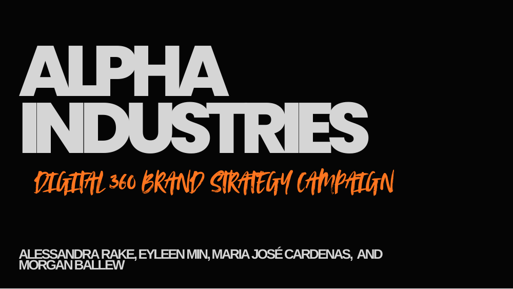
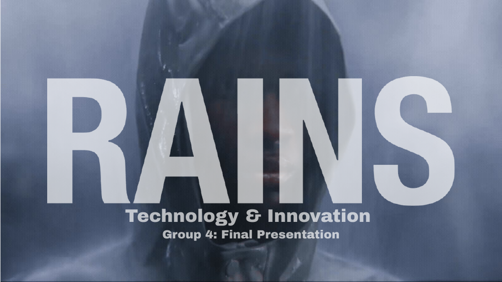
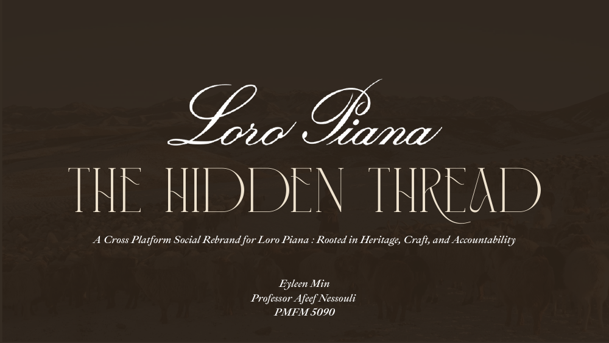

Selected Projects
Strategy, experiential concepts, and digital storytelling developed at Parsons. Select a cover to open the full presentation.

Moschino Market
A playful pop-up retail concept translating Moschino's satirical fashion identity into an everyday market experience, with strategy, operations, and commercial planning.
View deck ↗
Alpha Industries
A New York-rooted brand strategy spanning a creative platform, hero film, print, out-of-home, digital experience, and distribution ecosystem.
View deck ↗
Rains
A technology and innovation concept for the functional outerwear brand, including an in-store weather experience and connected digital touchpoints.

Loro Piana — The Hidden Thread
A cross-platform social rebrand making craft, material innovation, and sourcing accountability visible while respecting the house's quiet-luxury voice.
View deck ↗